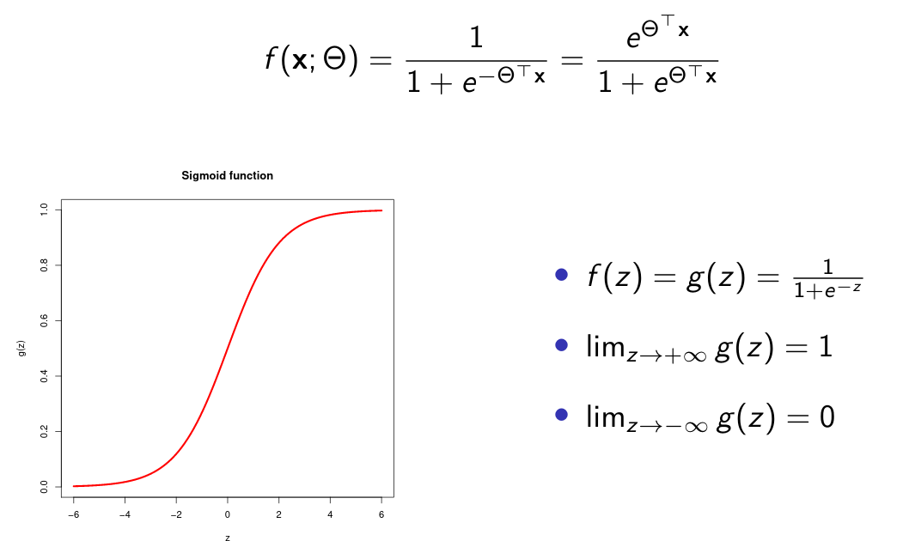
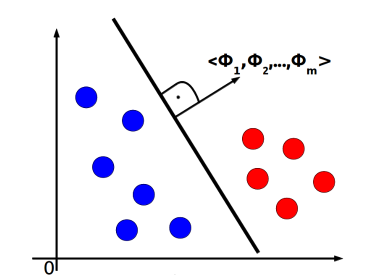
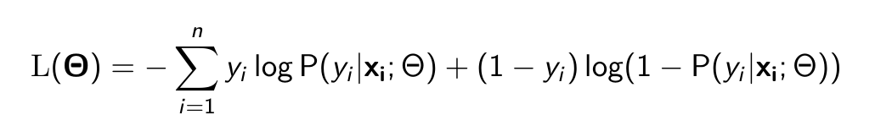

Logistic Regression
Main Idea
Logistic regression is a statistical model that in its basic form uses a logistic function to model a binary dependent variable, although many more complex extensions exist. In regression analysis, logistic regression (or logit regression) is estimating the parameters of a logistic model (a form of binary regression).
Logistic Function
The target hypothesis f for a binary classification has the form of sigmoid function:
Hyperplane
Logistic regression creates a linear hyperplane which divides the feature space into two parts. Classification is the based upon which part the example is in.
This also shows the problem of linear regression: it fails when there is no linear decision boundary.
Optimization
The goal in creating a logistic regression model is to find the best parameters θ0, θ1, ..., θm. Different values of θ are compared using the Loss Function (L). The parameters which produce the smallest value of Loss Function (L) are considered to be the best:
